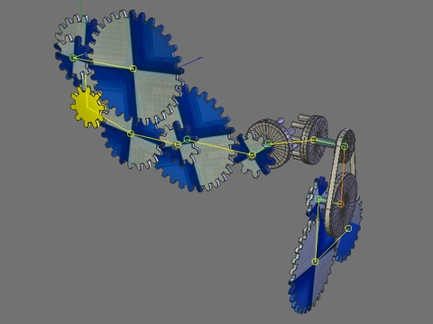

What is GearBuilder?
GearBuilder is a small but nevertheless helpful plugin for building almost any kind of gear.
To make it simple, GearBuilder is an expression for constraining the rotation and position of objects to emulate the behaviour of cogwheels, wheels on an axis and wheels connected by belts.
The created gears can either be driven by a GearBuilder motor or simply by keyframing the rotation of the initial wheel.
